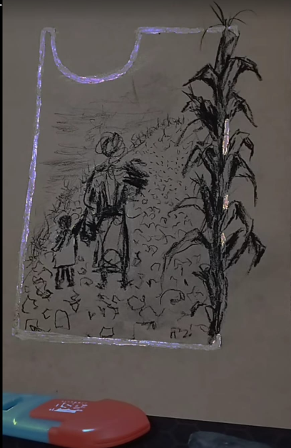
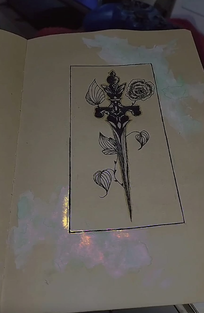
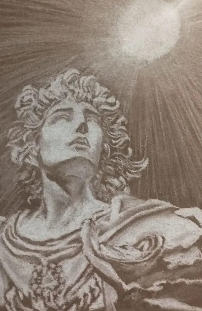
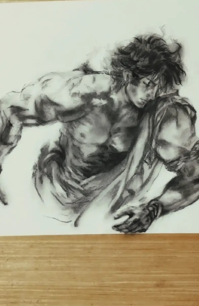

Recopilaciones
Planito Banana
Índice General
Lecturas Destacadas
El Niño del Internet
Cómo le explicas a un niño qué es Internet
La de Las Dos Cabezas

El rol de la mujer indígena en la sociedad
Galería de Inspiración

Dulce daga, sé gentil y rápida...

El interminable dolor del amor...

Así van a ser los días sin él...